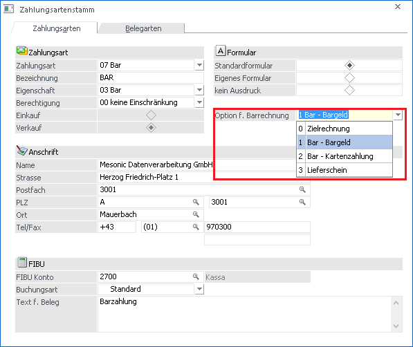

Im Menüpunkt
1 Stammdaten
1 Mandantenstammdaten
1 Zahlungsarten
in der WinLine FAKT muss zumindest eine Zahlungsart wie folgt als "Bar-Zahlungsart" angelegt werden:
Im Fenster Zahlungsarten gibt es die Auswahllistbox "Option f. Barrechnungen" wo ausgewählt werden kann, ob diese Zahlungsart als Zielrechnung, Bargeld-, oder Kartenzahlung verwendet werden soll.

Ø Zielrechnung
Wenn mit dieser Option gezahlt wird, wird das Konto verwendet, welches im Zahlungsartenstamm hinterlegt ist. Es wird kein Datenerfassungsprotokoll-Eintrag geschrieben, wenn mit dieser Zahlungsart gezahlt wird.
Ø Bar - Bargeld
Mit dieser Option wird für die Zahlung das FIBU-Konto verwendet, welches im Kassenstamm hinterlegt ist. Hier wird der Betrag der Zahlung in das Datenerfassungsprotokoll geschrieben.
Ø Bar- Kartenzahlung
Hier wird für die Zahlung das FIBU-Konto verwendet, welches im Zahlungsartenstamm hinterlegt ist und es wird das Datenerfassungsprotokoll befüllt.
Ø Lieferschein
Falls eine Zahlungsart mit dieser Einstellung verwendet wird, wird im Kassendashboard keine Rechnung, sondern ein Lieferschein erzeugt. Zahlungen mit dieser Option werden nicht verbucht und schreiben keinen Eintrag ins DEP. In anderen Belegerfassen-Menüpunkten können diese Zahlungsarten nur bis zur Belegstufe "Lieferschein" verwendet werden.
Hinweis:
Wenn neue vorhandene Zahlungsarten auf die Option "Bar" gesetzt werden bzw. neue Barzahlungsarten angelegt werden, müssen diese in der Belegart und im "Zahlungstableau" in der Kassentableau-Zuordnung zusätzlich aktiviert werden.
Hinweis:
Im Falle, dass Rechnungen per Überweisung bezahlt werden, muss eine eigene Zahlungsart mit der Option "Zielrechnung" angelegt werden. Diese Zahlungsart darf nämlich keinen Eintrag im Datenerfassungsprotokoll erzeugen.
Hinweis:
Wenn im Menüpunkt Kassenstammdaten in der Tabelle "Welche Benutzer dürfen Barrechnungen erfassen" in einer Benutzerzeile ein abweichendes FIBU-Konto eingetragen ist, wird das dort hinterlegte Konto verwendet.